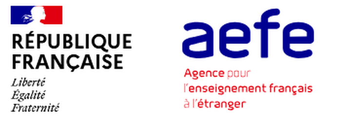

Vivre la tâche comme vos élèves, puis en faire des choix.
Observer ce qui s’y joue, puis en faire des choix pédagogiques. Choisissez une branche de l’arbre : chaque atelier est une carte à retourner.
Fehmi KLABI · Professeur de technologie · Formateur · Conseiller pédagogique
Entrer dans la formation
Saisissez le code communiqué pendant la formation.
Après la saisie du code, la page demandée s’ouvrira directement.
Le code est mémorisé sur ce navigateur : vous ne le saisissez qu’une fois. « Fermer l’accès », en haut de page, l’efface.
Pourquoi la tâche vient-elle avant l’explication ?
Certaines tâches sont proposées avant l’explication, là où vos élèves buteront. Vous les vivez pour observer ce qui s’y joue : les représentations, les stratégies, les obstacles. La difficulté n’est jamais le but : elle sert à penser, expliquer et reconstruire un modèle plus solide.
Déposer vos travaux
Transmettez une production réalisée pendant un atelier (PDF, synthèse, fiche projet). Les dépôts sont classés dans le répertoire Formation.